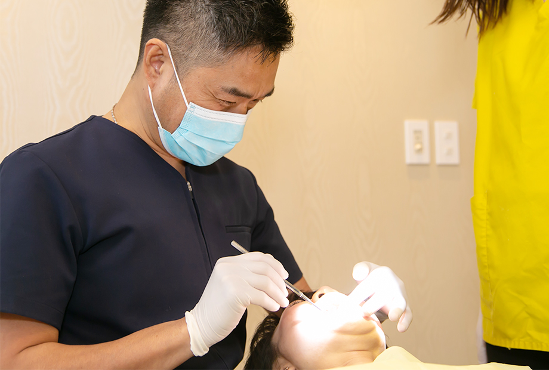
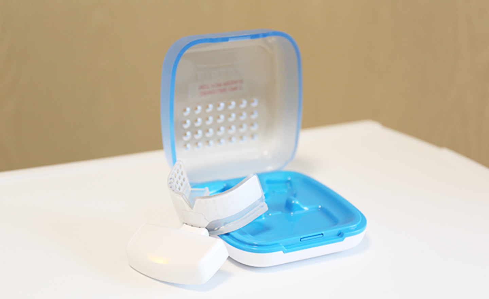
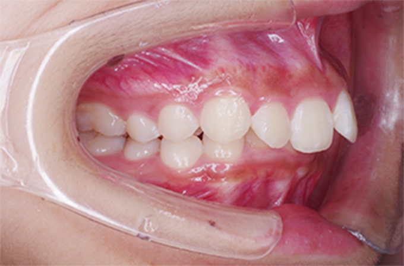

矯正治療は専門医院をお勧めします
矯正治療専門医師/マウスピース矯正治療のエキスパート
院長山澤が
理想の歯並びに導きます
-
日本矯正歯科学会
認定医
23
-
インビザライン
ダイヤモンド
プロバイダー
4年
連続更新 -
インビザライン
に特化した最新設備
歯科用CTiTero
歯医者選びで迷ってい
ませんか？
インビザラインで歯を矯正したいけど・・・
矯正治療を目的とした歯科医院の
選び方、何がポイント？
- 普通の歯医者と違うの？
- どんな症例でもいいの？
- インビザライン以外と何が違うの？
- インビザラインはどこでも同じ？
ATTENTION
インビザライン（※薬機法 対象外）
は「どこで受けても同じ」というわけではありません
矯正治療の専門的知見があるかどうかで、インビザライン（※薬機法 対象外）の仕上がりに大きな差が生まれます。インビザラインでもっとも重要になるのが、治療のシミュレーションを行う「クリンチェック」。コンピュータ上で自動的に作成されますが、そのデータを基にしてドクターが0.1mm単位で調整を行います。
この調整ひとつで治療後の仕上がりが変わるため、より矯正治療の理論や専門知識、インビザラインを含むワイヤー矯正の経験や技術、マウスピース矯正についての深い理解と経験のある矯正専門医の元で治療を行うことを推奨します。

インビザライン（インビザライン ※薬機法対象外）
で起こりやすい失敗について
テキストが入ります。テキストが入ります。テキストが入ります。テキストが入ります。テキストが入ります。テキストが入ります。テキストが入ります。テキストが入ります。テキストが入ります。テキストが入ります。テキストが入ります。テキストが入ります。テキストが入ります。テキストが入ります。テキストが入ります。テキストが入ります。テキストが入ります。テキストが入ります。テキストが入ります。テキストが入ります。テキストが入ります。テキストが入ります。テキストが入ります。テキストが入ります。テキストが入ります。テキストが入ります。テキストが入ります。テキストが入ります。テキストが入ります。テキストが入ります。300
テキストが入ります。テキストが入ります。テキストが入ります。テキストが入ります。テキストが入ります。テキストが入ります。テキストが入ります。テキストが入ります。テキストが入ります。テキストが入ります。テキストが入ります。テキストが入ります。テキストが入ります。テキストが入ります。テキストが入ります。テキストが入ります。テキストが入ります。テキストが入ります。テキストが入ります。テキストが入ります。テキストが入ります。テキストが入ります。テキストが入ります。テキストが入ります。テキストが入ります。テキストが入ります。テキストが入ります。テキストが入ります。テキストが入ります。テキストが入ります。テキストが入ります。テキストが入ります。テキストが入ります。テキストが入ります。テキストが入ります。テキストが入ります。テキストが入ります。テキストが入ります。テキストが入ります。テキストが入ります。400
当院院長は矯正認定医であり、
インビザライン公式認定ドクターの資格を有する
矯正治療のプロフェッショナルです
インビザラインドクター
日本矯正歯科学会
インビザライン公式認定ドクター
院長の山澤は、インビザライン公式認定ドクターです。また、国内6,000人の認定ドクターのうち、わずか50名にしか送られない「ダイヤモンドプロバイダー」を4年連続で受賞しています。このステータスは、年間症例数150～400の医院や歯科医院を対象しており、法人単位（グループ医院等）で合計することができます。
しかし、院長の山澤は一医院・一矯正医でこの称号を獲得しているため、日本でも10本の指に入るほどのドクターと言えます。豊富な臨床経験と実績がある当院院長だからこそ、自信をもって、的確な診断と治療をご提供することができるのです。
日本矯正歯科学会所属 認定医
院長の山澤は、日本矯正歯科学会に所属し、1998 年には認定医資格を取得。矯正治療を専門に、歯科治療の第一線に携わってまいりました。現在も臨床経験を重ねながら、最新の情報・知識の獲得に努めています。矯正治療の基本理論はもとより、ワイヤー矯正やマウスピース矯正など、さまざまな矯正方法を熟知し、現在も研鑽に励んでいます。患者様から寄せられる多様な矯正ニーズに対応し、一人ひとりのお口のお悩みに寄り添い、解決につながる適切な治療を安全にご提案してまいります。
インビザライン公式認定ドクターとして
4年連続
｢ダイヤモンドプロバイダー｣を保持
インビザライン（※薬機法 対象外）を提供する「アライン・テクノロジー社」では、認定ドクターが手がけた症例数に応じて、プロバイダーステータスを授与しています。これは毎年更新されるもので、ダイヤモンドプロバイダーを4年連続で受賞している当院では、毎年コンスタントに一定数の症例を手がけたことを意味します。この豊富な実績と経験を活かし、一人ひとりの患者様への治療品質の向上につなげてまいります。
GREETING
矯正のことなら 目白・
池袋の歯医者
「目白歯科矯正歯科」 院長山澤秀彦にご相談ください
23年の治療経験と豊富な実績日本矯正歯科学会 認定医
一口に矯正治療と言っても、治療完了のラインは担当したドクターの感覚で決まる部分があります。少々厳しい見方になりますが、学会や研究会等で、治療終了時の歯並びや咬み合わせの症例写真を目にする機会では、自分の患者様ならこれでゴールにはしないなと感じる症例が少なくありません。
当院の矯正治療では、患者様の望む完成形に近づけながら、矯正歯科医から見ても理想的な歯並び・咬み合わせを追求します。もちろん、咬み合わせや顎の機能性には個人差があります。さまざまな条件を考慮しながらも、妥協することなく患者様にとってのベストを尽くすことをモットーにしています。
また、難症例にもしっかり対応できるよう、勉強会や学会へ積極的に参加し、さまざまな先生方の症例や治療法から学ばせていただいています。自分の家族にも安心してすすめられる方法をご提案させていただきますので、歯並びのことでお悩みでしたら、まずはお気軽にご相談ください。
経歴
- 平成6年3月東京医科歯科大学歯学部卒業
- 平成6年4月東京医科歯科大学附属病院矯正科 入局
- 平成10年3月東京医科歯科大学大学院 修了 （歯学博士）
- 平成13年3月東京医科歯科大学附属病院伸和会 三空歯科 勤務
- 平成24年5月目白歯科矯正歯科院長就任
所属学会
- 日本矯正歯科学会 会員
- 日本舌側矯正歯科学会 会員
- 日本歯科審美学会 会員
- 日本顎関節学会 会員
マウスピース矯正への関わりと考え方
「マウスピース矯正」については、日本への導入初期から採用しています。さまざまなメーカーのマウスピース矯正が登場していますが、その精度の高さから当院では現在、インビザライン（※薬機法 対象外）を採用しています。
インビザライン（※薬機法 対象外）による矯正治療では、歯並び・咬み合わせともに、矯正歯科医から見て理想的な仕上がりが得られています。ワイヤー矯正と比較しても遜色ありませんし、5年以内であれば進行具合に応じて、作り直しが可能です。当院のインビザラインを使った治療では、難しい症例にも対応可能で、本来であれば●回程度作り押しが必要になる場合が多いですが、マウスピースを作り直す回数も最低限に抑えることができます。おかげさまで「ダイヤモンドプロバイダー」も4年連続で頂戴しています。
最優先とするのは患者様のお気持ちと、理想的な治療成果です。ご提案する際には、「患者様に合った治療法か」、「他の矯正方法と比較したときにどういったメリット・デメリットがあるか」ということをしっかりとご説明させていただき、患者様自身に治療法をお選びいただいています。ご相談は無料ですので、どうぞお気軽にお問い合わせください。
他院での提案に満足
できなかった方はご相談ください
-
抜歯しな
いで矯正
したい…… -
歯並びを治すのに
手術が必要
と言われた…… -
難しい歯並びで
断られた… -
ワイヤー矯正
しか選べない
と言われた
このような患者様のお悩みにお応えできるのは、矯正を専門とするドクターです。
矯正治療でもっとも大切なことは、正確な診査・診断と、シミュレーション。
当院では、患者様のお悩みに寄り添い、精密検査や経験豊富な矯正認定医による診断で、お悩みを解決する方法を一緒に探っていきます。
WHAT’S INVISALIGNインビザラインって？
ABOUT
マウスピース矯正治療（インビザライン ※薬機法 対象外）について
マウスピース矯正は、透明なマウスピースを一定期間ごとに交換しながら装着し、歯並びを整えていく治療法です。当院では、マウスピース矯正として近年注目されている「インビザライン（※薬薬機法 対象外）」を採用しています。
インビザラインは、患者様の口腔内のデータから、ゴールとなる理想的な歯並びをコンピュータ上でシミュレーションして作成します。治療開始から終了までの歯の動きを3D動画として見ることができ、患者様も一緒に確認していただけます。矯正歯科医による調整（クリンチェック）を経て、メーカーへデータを送り、数週間ですべての期間のマウスピースが届きます。
お口の状態にもよりますが、一日20～22時間の装着で、2～4週間毎にマウスピースを交換します。透明なマウスピースは、周囲の人にも装着していることをほとんど気づかれず、食事や歯みがきの際には取り外しが可能です。
※薬機法：医薬品医療機器等法
インビザラインは、アメリカのアライン・テクノロジー社へ患者様のデータをお送りし、完成品であるマウスピースを返送してもらい、治療に使用します。日本の国家資格を持つ歯科医師や歯科技工士が手がけたものではないため、完成品・既製品としても厚生労働省に薬事承認されていません。素材は国内で薬事承認されたものですので、安心して使用できます。
TYPES OF INVISALIGN インビザラインの種類
インビザライン フルタイプ
ベーシックなインビザラインです。各医院にて精密な型取りを行ったあと、型取りをもとにインビザラインの販売元であるアライン・テクノロジー社にて三次元シミュレーション（クリンチェック）とアライナー（マウスピース）を製作します。
インビザライン ライトタイプ
アライナー制作枚数14枚以内
比較的軽度な症例で、アライナーの製作枚数が14枚以内の場合は、インビザライン・ライトで対応することが可能です。ただし、14枚までとなると歯の隙間を埋めたり、軽い前歯の凸凹を綺麗にしたり程度の治療しか行うことができません。

インビザライン i7
アライナー制作枚数7枚以内
インビザラインライトよりも軽い症例の際は、インビザラインi7で対応することが可能です。アライナーの製作上限枚数は7枚と少ないため、非常に軽い症例にしか対応できません。
インビザライン ファースト
（第1期小児矯正）
子どもの歯にも使える
マウスピース矯正が登場
インビザライン（※薬機法 対象外）は、これまで永久歯が生え揃ってから行う矯正治療（第II期治療）でしか使用できませんでした。しかし、技術の進歩により、乳歯と永久歯が混在する時期の矯正治療（第I期治療）を対象とした矯正システムが登場しました。それが、インビザライン・ファーストです。
インビザライン・ファーストは、通常のインビザラインと同様に、透明なマウスピースを使った矯正治療です。食事中や歯みがき時には取り外しが可能で、虫歯のリスクを抑えながら矯正治療が行えます。運動や外遊びのときでも、ワイヤー矯正のようにお口に装置がぶつかってケガをする心配がありません。
第I期治療の目的でもある、歯が並ぶスペースを顎に確保する「歯列弓の拡大」を実現しながら、歯並びを整えることができます。第II期治療時の抜歯リスクを低減し、治療期間の短縮も期待できます。お子さんの歯並びが気になっている方、子どもにもマウスピース矯正をさせたいという保護者の方は、どうぞお気軽に当院へご相談ください。
COMPARISON マウスピース矯正治療の種類
※表は左右にスクロールして確認することができます。
|
インビザライン
すべての歯を対象とするマウスピース矯正。 |
インビザライン 部分的な歯を対象とするマウスピース矯正。対象範囲はフルタイプより狭く、キレイラインより広い。マウスピースは最大14枚。 |
キレイライン 前歯6本（上下で12本）のみを治療対象とするマウスピース矯正。見た目重視で軽度の歯並びの乱れを改善できる。 |
ワイヤー 従来型の矯正治療。歯に取り付けたブラケットにワイヤーを通して歯に負荷をかけ移動させる方法。抜歯矯正でも対応。 |
裏側矯正 歯の裏側にワイヤーを付ける矯正治療。他人から見ても裏側にあるため見えることが少ない。抜歯矯正でも対応。 |
|
| 対象となる歯 | すべての歯 | 部分的な歯 | 前歯6本（上下で12本）のみ | すべての歯 | すべての歯 |
| メリット |
|
|
|
|
|
| メリット |
|
|
|
|
|
| 適応症例の数 | |||||
| 通院の少なさ | |||||
| 国内の導入医院 |
矯正歯科医のみ可能 |
矯正歯科医のみ可能 |
|||
| 価格 | |||||
| ドクターの技術 |
重要 |
重要 |
医師不要 |
重要 |
重要 |

MERIT マウスピース矯正治療（インビザライン ※薬機法 対象外）のメリットと特
01
透明なマウスピースで周りに気づかれない
透明な装置なので装着中も周りに気づかれる事はほとんどありません。また、どうしても気づかれたくない場合は取り外すことも可能です。
02
食事中や歯みがき時は自分で取り外せる
ご自身で取り外しが可能なため、食事が摂りやすく歯みがきもしやすくなっています。そのため、ワイヤーの矯正に比べて虫歯に発展する心配がほとんどありません。
03
歯を移動させるときの痛みが少ない
1つのマウスピースで動かす歯の移動距離は少なくなっています。そのため痛みが少ないのです。ワイヤーやブラケットの、装置が付いている異物感や痛みもありません。
04
治療期間中の通院回数が少ない
お作りしたマウスピースはご自身で交換の管理をしていただきます。通院は、2～3か月に一度のメインテナンスのみとなります。留学や出張などで来院が難しくなった場合は調整が可能です。
05
金属不使用で金属アレルギーの心配がない
マウスピースはポリウレタン製です。ワイヤー矯正で使用されるワイヤーは金属でできていますが、インビザラインでは金属を使用していないため、アレルギーの心配がありません。
06
装着したままスポーツもできる
ワイヤー矯正は装着したブラケットやワイヤーで口の中を傷つけることがありますが、マウスピース矯正は取り外しが可能な上、ポリウレタン製ですので口の中を傷つける心配はありません。そのため、人と接触するスポーツも安心して行えます。
DEMERIT インビザラインのデメリット
- 1日20時間以上の装着が必要
- 適応できない症例がある
- 治療完成まで時間がかかる
- 気軽に食事ができない
- マウスピースの交換は自己管理
こんな方にオススメです！
- 歯並びがコンプレックスで消極的になりがちな方
- 周囲に気づかれないうちに歯並びを治したい方
- 営業や接客など、人と向き合うお仕事をされている方
- 結婚式や就職活動など、大事なイベントを控えてる方
- モデルや俳優、歌手など、人前に出ることが多い職業の方
当院のマウスピース矯正にはこんなメリットがあります
- ・患者様のご希望するゴール（歯並び）に合わせて治療が可能
- ・さまざまな歯並びのお悩みに合わせて、最適な治療方法をご提案
- ・矯正を専門としてきた経験から、マウスピース矯正以外のご提案も可能
- ・後戻り保証をご用意しています
- ・マウスピース矯正だけでは不十分な場合は2次矯正にも対応可能
SUPPORT
DEVICE
マウスピース型矯正装置インビザライン（※薬機法 対象外）補助装置
アタッチメント
インビザラインの特徴でもあるアタッチメントとは、歯の移動を補助するための装置で、虫歯の治療にも使用されるプラスティックを歯に直接取り付けます。歯の色と合わせることができるので、目立ちにくく、小さいので違和感も少ないです。
顎間ゴム
顎間ゴムとは、歯の移動を補助するゴムで、上下のアライナー同士を固定する際に使用します。上顎を引っ込めて下顎を出したいなどの症例に使用します。
アンカースクリュー
短時間で効率的に歯を動かすため、矯正用の小型インプラント（アンカースクリュー）とインビザラインを組み合わせて使用することがあります。このアンカースクリューは矯正治療終了後に撤去し、傷跡も1週間程度でほとんどなくなります。
※写真はワイヤー矯正との組み合わせです。
アライナーチューイ

アライナーと歯の密着度合いを高める器具です。アライナーを装着した状態で、ガムを噛むようにアライナーチューイを噛むことで、アライナーがギュッと押されて密着度が高まります。一日20分程度毎日噛んでいただくことが望ましく、使用すればするほど矯正治療効果が高まるとされています。
専用洗浄剤
アライナーの洗浄剤で、1週間に1回程度使用していただきます。ぬるま湯に洗浄剤を溶かして浸すだけで、目に見えない小さな汚れも綺麗に取り除くことができます。通常の洗浄は、流水ですすぐ程度で大丈夫です。
痛みを軽減し治療期間を
短縮できる装置があります
オルソパルス
（マウスピース型 光加速矯正）

当院では、マウスピース矯正の経過が良好な患者様に対し、矯正の痛みを軽減し、歯の移動スピードをアップさせる近赤外線治療機「オルソパルス」をおすすめしています。赤外線治療は、骨折の治癒促進などを目的に医療現場で採用されている、安全な治療方法です。
オルソパルスは、お口に軽くくわえて歯ぐきに近赤外線を照射します。大変軽いつくりとなっているため、強くくわえる必要はありません。お手入れも使用後に水洗いするだけでOK。一日に上下5分間ずつ装着することで、近赤外線が歯の周りの細胞を活性化させます。毎日適切な時間だけ装着することで、よりよい効果が期待できます。「今日は20分オルソパルスを使ったから次の日はやらなくていい」というわけではありませんので、ご注意ください。
オルソパルスは、年齢を問わずご利用いただくことができ、妊娠中でも安心して使えます。オルソパルスについてご興味がある方、不安や疑問がある方は、どうぞお気軽に目白・池袋の歯医者「目白歯科矯正歯科」へご相談ください。
TREATMENT
目白・池袋の歯医者
「目白歯科矯正歯科」が選ばれる7つの理由
POINT01 患者様の想いに向き合う 丁寧なカウンセリング
- 目白・池袋の歯医者「目白歯科矯正歯科」では、患者様のご希望を最大限考慮した矯正治療をご提案するために、治療前のカウンセリングを大切にしています。治療に対する患者様のご要望や、普段のライフスタイルを踏まえて治療方法を検討し、お口の状態に合わせた治療計画を立案します。採用する矯正装置のメリット・デメリット、治療費や治療期間についても、わかりやすく丁寧なご説明を心がけています。また、患者様のご同意をいただいてから治療を開始いたしますので、ご安心ください。結婚式や就職活動など、大切なご予定に備えた矯正治療も可能です。初回カウンセリングは無料ですので、スケジュールに合わせてお早めにご相談ください。
POINT02 一人ひとりの患者様に合わせた フルオーダーメイド治療

- お口の中の状況は一人ひとりの患者様ごとに異なり、治療法を選ぶ際には、慎重に検討する必要があります。マウスピース矯正（インビザライン ※ 薬機法 対象外）やワイヤー矯正など症例によって向き不向きがあります。また、ワイヤー矯正や裏側矯正のほか、複数の方法を組み合わせることで、よりよい治療効果が見込める場合があります。当院の院長は矯正の専門医であるため、インビザラインだけではない他の治療提案が可能です。
- 当院では、患者様のお口の中がどのような状態で、どのような治療が必要なのかドクターの考えを分かりやすくご説明します。それを踏まえて、治療方法、治療計画を立案。患者様のご希望を踏まえながら、矯正歯科医として追求したい理想的な歯並びも目指せるよう、矯正を専門とするからこそできるご提案をいたします。
POINT03
手軽にお口の中をデータ化する3D
口腔内スキャナー
｢iTero
(アイテロ)｣
導入
- 当院では、お口の中を立体的かつ精確に撮影できる3D口腔内スキャナー iTreo（アイテロ）を導入しています。光学スキャナーですので、お口の中にカメラを入れるだけで撮影は完了。石膏やシリコンによる従来の歯型採取の方法よりも、格段に患者様の負担は軽減できます。特に、嘔吐反射がある患者様には、粘土状の印象材をお口に入れる必要がなく、撮影も短時間で完了することから大変おすすめです。
- さまざまな3D口腔スキャナーは登場していますが、現在インビザライン（※薬機法 対象外）に対応しているのはアイテロのみ。スキャナーで取得したお口のデータはコンピュータに取り込み、矯正治療のシミュレーションに使用します。治療の経過を視覚的に確認できるため、患者様へのご説明にも活用しています。
POINT04
精確な診査・診断を実現する
歯科用CTとレントゲン撮影
- 矯正治療時には歯科用CTを使用して、精密な診査・診断に役立てています。従来のレントゲン撮影や口腔内スキャンでは確認できない、顎の骨の形状や厚みなども、歯科用CTでなら3D画像としてモニター上に映し出して見ることができます。
- 矯正治療で歯を動かす前には、そこに骨があるのかないのか、歯がどのように埋まっているのか、歯根の向きはどうなっているのかなど、精確に把握して治療を進めます。これらは、口腔内スキャンや二次元的なレントゲン撮影では不十分で、歯科用CTによる検査が必要です。現在の精密な歯科治療・矯正治療には、歯科用CTがなくてはならない存在となっています。
POINT05
3Dデジタルデータをフル活用し、
治療シミュレーションを可視化
- 矯正治療で重要となるのが、治療の事前シミュレーションです。精密なシミュレーションが行えれば、治療がスムーズに進み、治療期間の短縮や患者様の心身のご負担を軽減することにもつながります。
- 当院では、iTeroや歯科用CTなどの精密機器によって得たデジタルデータを活用し、治療シミュレーションを行っています。モニター上で3D画像として可視化されるため治療経過を予測しやすく、患者様へのご説明時にも利用しています。このとき、途中段階や一部のデータだけなど、不十分な状態でお見せすることはありません。確実なものをしっかりとご提示しながら治療方針についてご相談させていただいています。
POINT06
矯正歯科に20年携わり､
豊富な実績を持つ院長が担当
- 当院院長は矯正歯科医として、矯正治療にこだわった診療を続けてまいりました。現在も、患者様のご希望を踏まえながら、矯正のプロとして理想的と思えるゴールを目指し、妥協のない診療を行っています。患者様のお口に、機能性と審美性を兼ね揃えた状態をつくるため、常に最善を尽くした診療を、これからもご提供してまいります。
- 院長がマウスピース矯正を手がけるようになって20年が過ぎました。数々の経験を通じてより治療成績を高める手法を確立し、難症例にも的確な診断・治療で成功に導きます。マウスピース矯正でも、ワイヤー矯正と同程度の仕上がりを実現しています。インビザライン（※薬機法 対象外）を中心としたマウスピース矯正を得意としていますが、ワイヤー矯正をはじめ裏側矯正などさまざまな矯正治療も安心してお任せいただけます。
POINT07
矯正歯科医としてゴールまで
責任をもって患者様に向き合います
理想の笑顔を手に入れて！
- やむを得ない理由で治療が中断されてしまうことがあります。例えば、健康上の理由などでマウスピースの正しい装着が継続できなくなる場合や、マウスピースの破損や紛失で治療継続が困難になった場合などです。
- こういった場合には、ワイヤー矯正への切り替えや、他の治療法と組み合わせた治療のご提案も可能です。また、当院が手がけるマウスピース矯正（インビザライン ※薬機法 対象外）で、想定していた結果が得られなかった場合にワイヤー矯正治療等へ切り替える場合には、通常の半額のお値段で治療をご提供しています。
- さらに、一般的な歯科医師では対応できないような治療のお悩みにも、矯正を専門的に診療してきた当院だからこそ対応可能なケースがあります。他院で治療が難しく断られたような症例や軌道修正にも、当院なら対応可能な場合があります。患者様とドクターが納得できる理想のゴールを設定し、一緒に目指してまいります。
INVISALIGN CASE STUDY
当院が手がけたマウスピー
ス矯正治療の
症例紹介
CASE
01
出っ歯
- 
CT画像データ
途中経過
治療についての詳細
| 施術名 | 施術名が入ります。施術名が入ります。施術名が入ります。 |
|---|---|
| 施術の説明 | 施術の説明が入ります。施術の説明が入ります。施術の説明が入ります。 施術の説明が入ります。施術の説明が入ります。施術の説明が入ります。 施術の説明が入ります。 |
| 施術の副作用（リスク） | 副作用の説明が入ります。副作用の説明が入ります。副作用の説明が入り ます。副作用の説明が入ります。副作用の説明が入ります。副作用の説明 が入ります。 |
| 施術の価格 | ¥000,000～¥000,000 |
02
受け口
CT画像データ
途中経過
治療についての詳細
| 施術名 | 施術名が入ります。施術名が入ります。施術名が入ります。 |
|---|---|
| 施術の説明 | 施術の説明が入ります。施術の説明が入ります。施術の説明が入ります。 施術の説明が入ります。施術の説明が入ります。施術の説明が入ります。 施術の説明が入ります。 |
| 施術の副作用（リスク） | 副作用の説明が入ります。副作用の説明が入ります。副作用の説明が入り ます。副作用の説明が入ります。副作用の説明が入ります。副作用の説明 が入ります。 |
| 施術の価格 | ¥000,000～¥000,000 |
03
叢生（でこぼこの歯）
抜歯をした症例
CT画像データ
途中経過
治療についての詳細
| 施術名 | 施術名が入ります。施術名が入ります。施術名が入ります。 |
|---|---|
| 施術の説明 | 施術の説明が入ります。施術の説明が入ります。施術の説明が入ります。 施術の説明が入ります。施術の説明が入ります。施術の説明が入ります。 施術の説明が入ります。 |
| 施術の副作用（リスク） | 副作用の説明が入ります。副作用の説明が入ります。副作用の説明が入り ます。副作用の説明が入ります。副作用の説明が入ります。副作用の説明 が入ります。 |
| 施術の価格 | ¥000,000～¥000,000 |
04
叢生（でこぼこの歯）
非抜歯の症例
CT画像データ
途中経過
治療についての詳細
| 施術名 | 施術名が入ります。施術名が入ります。施術名が入ります。 |
|---|---|
| 施術の説明 | 施術の説明が入ります。施術の説明が入ります。施術の説明が入ります。 施術の説明が入ります。施術の説明が入ります。施術の説明が入ります。 施術の説明が入ります。 |
| 施術の副作用（リスク） | 副作用の説明が入ります。副作用の説明が入ります。副作用の説明が入り ます。副作用の説明が入ります。副作用の説明が入ります。副作用の説明 が入ります。 |
| 施術の価格 | ¥000,000～¥000,000 |
05
開咬
CT画像データ
途中経過
治療についての詳細
| 施術名 | 施術名が入ります。施術名が入ります。施術名が入ります。 |
|---|---|
| 施術の説明 | 施術の説明が入ります。施術の説明が入ります。施術の説明が入ります。 施術の説明が入ります。施術の説明が入ります。施術の説明が入ります。 施術の説明が入ります。 |
| 施術の副作用（リスク） | 副作用の説明が入ります。副作用の説明が入ります。副作用の説明が入り ます。副作用の説明が入ります。副作用の説明が入ります。副作用の説明 が入ります。 |
| 施術の価格 | ¥000,000～¥000,000 |
FLOW
目白・池袋の歯医者
「目白歯科矯正歯科」の
矯正治療の流れ
STEP 01
無料相談
矯正治療を受けたい方、歯並びにお悩みがある方、どんなことでもお気軽にご相談いただけます。おおよその治療費となりますが、ご興味のある矯正方法についてお見積もりも可能です。患者様の不安や疑問に丁寧にお答えすることで、お口のお悩みに対する解決策を模索していきます。最初のご相談は無料で承っておりますので、どうぞお気軽に、ご予約のうえご相談ください。
STEP 02
精密検査
矯正治療の前には、お口の状態を適切に把握するため、さまざまな精密検査が必要です。当院では、必要に応じて下記の精密検査を行っています。
・歯科用CTやデジタルレントゲンでの撮影
・口腔内や顔貌の写真撮影M
・光学スキャナーiTero（アイテロ）による歯型模型の採取・作成
・咬み合わせチェック
・顎関節の撮影
・口腔内環境を確認するための唾液検査・歯周病検査
STEP 03
治療方針・シミュレーションの作成
精密検査で得られたさまざまなデータから、どのような矯正方法が適切か検討します。当院では、歯科用CTやデジタルレントゲン、iTero（アイテロ）などで得たデータをコンピュータに取り込み、3 D画像でのシミュレーションを実施します。このとき、それぞれの検査結果ではわからない部分（骨の状態など）があるため、組み合わせたシミュレーションを行うことが重要になってきます。
口腔内の状況は患者様ごとに異なりますので、データを組み合わせて多角的に治療法を検討します。また、お仕事や部活動、普段の生活リズムなど、患者様ごとのライフスタイルを考慮し、最適な治療方針を考えていきます。
STEP 04
診断・シミュレーションの説明
ご相談内容を踏まえ、精密検査や治療方針、作成したシミュレーションを患者様にご提示しながら、今後の方針を相談してまいります。すべての検査結果とシミュレーションのデータをお見せしながら解説いたしますが、治療方法については、患者様のご希望に合わせて柔軟に変更することができます。
各治療法については、メリット・デメリットを患者様のお口の状況を踏まえて、改めてご説明します。ご不明点にも丁寧にお答えし、疑問を解消しながら、患者様と一緒に治療方針を決定します。最終的に、治療内容へのご同意を得られてから、治療を開始します。
STEP 05
矯正治療開始
治療開始後は、通院の都度、口腔内や顎の状態などを写真に撮り、シミュレーションとの相違がないか確認し、また、記録を残しながら進めてまいります。治療途中に、もし治療の進み具合（歯の移動度合い）が予定通りでないことが確認できましたら、必要に応じてマウスピースを交換したり、作り直したりすることがあります。
歯の動き方も人それぞれですので、進行度は患者様によって違いますが、だいたいの患者様は作り直しが必要になります。当院で取り扱っているマウスピース矯正「インビザライン ※薬機法 対象外」では、5年以内であれば何回でも作り直しが可能です。通院回数は、お口の状態によって変動しますので、あらかじめご了承ください。
STEP 06
メンテナンス（保定）
治療完了後は、3～4ヶ月に1回のペースでメンテナンスのためにご来院いただきます。矯正治療で動かした歯は、しばらくすると元の位置に戻ろうとする力が働きます。メンテナンスでは、後戻りがないか、歯や顎のよい状態がキープできているかなど、歯並びをしっかり確認します。通常、メンテナンス（保定期間）としてご来院いただくのは、治療にかかったのと同じくらいの期間になります。
当院では、後戻り保証（下部項目へアンカーリンク）もご用意していますので、安心してお任せください。もし、マウスピース矯正（インビザライン ※薬機法 対象外）で望んでいた結果が得られなかった場合にも、ワイヤー矯正など二次治療をご提案することができます。矯正歯科医だからこそできる大きなメリットです。

FEE 料金表
左右にスクロールしてご確認ください。
※表は左右にスクロールして確認することができます。
|
マウスピース型 |
基本施術料（装置代）フルタイプ | 825,000円 (税込) |
|---|---|---|
| 基本施術料（装置代）ライトタイプ |
両顎495,000円(税込) 両顎385,000円(税込) |
|
| 基本施術料（装置代）エクスプレスタイプ |
両顎330,000円(税込) 両顎220,000円(税込) |
|
| インビザラインファースト |
両顎495,000円(税込) 両顎385,000円(税込) |
|
調節料 |
5,500円(税込) |
|
観察料 |
3,300円(税込) |
※患者様の不注意による装置の破損および紛失の際は別途費用がかかります
目白･池袋の歯医者
｢目白歯科矯正歯科｣
でのお支払い方法
～分割払い･クレジットカード･デンタルローン対応～

目白・池袋の歯医者「目白歯科矯正歯科」では、院内での分割払い（最大12回）、クレジットカード（分割払い可）、デンタルローン、電子マネー、QRコード決済などのお支払い方法に対応しています。下記ブランドのお支払いに対応しておりますので、あらかじめご確認いただければ幸いです。ご不明点などございましたら、お気軽にお問い合わせください。
院内分割払いでのお支払い例
68,750円/月
院内分割払いご利用例：12回分割（頭金0円）の場合
- 矯正料金 インビザラインフルタイプ（全顎） 825,000円
- お支払い内容 68,750円×12回
- お支払い合計 1,072,808 円
院内分割払いについては、分割手数料は発生いたしません。矯正装置の代金は、原則1年以内であれば、分割払いに対応可能です。JCB、VISA、MasterCard、Diners、American Expressなど各種クレジットカード、電子マネーでのお支払いが可能です。
デンタルローンでのお支払い例
12,760円/月
デンタルローンご利用例：実質年率5.8%（頭金0円）の場合
- 矯正料金 インビザラインフルタイプ（全顎） 825,000円
- お支払い合計 初回18,057円 2回目以降11,900円×84回
- お支払い合計 1,005,757円
当院では、アプラス、オリコのデンタルローンを導入しております。デンタルローンとは、歯科医療に限定されたローンのこと。信販会社が治療費を立て替え払いし、信販会社への手数料を加えた金額を分割で返済することができます。当院で導入するアプラスのデンタルローンについては、お支払い金額に応じてTポイントが付与されます。
デンタルローンについて詳しく知りたい方や、デンタルローンによるお支払いをご希望の方は、当院スタッフまでお気軽にご相談ください。
後戻り保証・二次治療をご用意しています
目白・池袋の歯医者「目白歯科矯正歯科」では、矯正治療後の後戻りに対して、保証制度をご用意しています。万が一、矯正治療後に歯科医師の指示通りにしていても後戻りがある場合には、装置代をいただくことなく、再治療をご提供いたします。その際、毎回の調節料はかかりますので、あらかじめご了承ください。
また、十分な治療結果が得られなかった場合には、患者様のご希望で矯正方法を変更することができます。例えば、マウスピース矯正からワイヤー矯正などへの変更など、矯正歯科専門の医院だからこそ、二次的な矯正治療のご提案が可能となっています。二次治療が必要になった場合には、半額の矯正治療費でご案内いたします。
【ご注意ください】
定期的な検診に来られない場合や、保定装置を指示通りに使われなかった場合は、保証対象外となります。
ワイヤー矯正装置でも目立たない！
マウスピース以外の矯正治療も
院長にお任せください
当院の院長は、矯正歯科医だからこそ、さまざまな矯正治療方法をご提案することが可能です。症例によっては、マウスピース矯正よりもワイヤー矯正の方が適しているケースもあります。また、患者様のご希望やライフスタイルに応じて、ワイヤー矯正の方がよりよい結果が得られるということもあります。最近は、歯の色に近いセラミックのブラケットや白いワイヤーなど、お口の中で目立たないワイヤー矯正装置が登場してきています。お口の状態やご希望に合わせて適切な方法をご提案いたします。ご興味がある方は、お気軽にお問い合わせください。
ホワイトワイヤー・
セラミックブラケット
従来のワイヤー矯正と同じ原理で、同じ治療効果がありながら、お口の中で目立たない矯正装置です。従来のワイヤー矯正のように、ブラケットを歯に貼り付け、そこへワイヤーを通すという手法はまったく同じで、あらゆる症例に対応可能です。
ホワイトワイヤー・セラミックブラケットでは、銀色のワイヤーではなく白いワイヤーを使用し、金属のブラケットの代わりに、白いセラミックや透明素材のブラケットを使用します。それぞれの素材の進化も著しく耐久性に優れているため、装置が目立たないにも関わらず、これまでと同じ治療効果が得られます。
歯の裏側（舌側）に装置を取り付けるため、外から見て矯正装置が見えることがほとんどありません。はじめのうちは、会話や食事、歯みがきに難しさを覚えますが、慣れれば問題なく生活していただけます。食事の際に、装置に食べ物がつまっているのが見えることもありません。また、舌側は唾液の循環があるため虫歯になりにくいといったメリットがあります。舌癖のある場合は、その改善も期待できます。トランペットなど、唇に押し当てる金管楽器を演奏される方にもおすすめの治療法です。
舌側に装置を取り付けるのには、ドクターの高い技術力が必要となりますが、矯正歯科医である当院院長なら経験・実績ともに豊富にあり、安心してお任せいただけます。
裏側矯正
(舌側矯正･リンガル矯正)
当院院長は特殊な矯正装置
｢インコグニト｣｢ハーモニー｣
｢アリアス｣｢インシグニア｣
の認定ドクターです
Q&A よくあるご質問
追加費用がかかることはありますか？
回答のテキストが入ります。回答のテキストが入ります。回答のテキストが入ります。回答のテキストが入ります。回答のテ
キストが入ります。回答のテキストが入ります。回答のテキストが入ります。回答のテキストが入ります。
回答のテキストが入ります。回答のテキストが入ります。
虫歯があるのですが？
回答のテキストが入ります。回答のテキストが入ります。回答のテキストが入ります。回答のテキストが入ります。回答のテ
キストが入ります。回答のテキストが入ります。回答のテキストが入ります。回答のテキストが入ります。
回答のテキストが入ります。回答のテキストが入ります。
他院で断られた経験があるのですが・・・
回答のテキストが入ります。回答のテキストが入ります。回答のテキストが入ります。回答のテキストが入ります。回答のテ
キストが入ります。回答のテキストが入ります。回答のテキストが入ります。回答のテキストが入ります。
回答のテキストが入ります。回答のテキストが入ります。
他の医院で治療しても変わりないでしょうか？
回答のテキストが入ります。回答のテキストが入ります。回答のテキストが入ります。回答のテキストが入ります。回答のテ
キストが入ります。回答のテキストが入ります。回答のテキストが入ります。回答のテキストが入ります。
回答のテキストが入ります。回答のテキストが入ります。
ホワイトニングも同時にできますか？
回答のテキストが入ります。回答のテキストが入ります。回答のテキストが入ります。回答のテキストが入ります。回答のテ
キストが入ります。回答のテキストが入ります。回答のテキストが入ります。回答のテキストが入ります。
回答のテキストが入ります。回答のテキストが入ります。
抜歯をしてもインビザラインで矯正できますか？
回答のテキストが入ります。回答のテキストが入ります。回答のテキストが入ります。回答のテキストが入ります。回答のテ
キストが入ります。回答のテキストが入ります。回答のテキストが入ります。回答のテキストが入ります。
回答のテキストが入ります。回答のテキストが入ります。
痛みはありますか？
回答のテキストが入ります。回答のテキストが入ります。回答のテキストが入ります。回答のテキストが入ります。回答のテ
キストが入ります。回答のテキストが入ります。回答のテキストが入ります。回答のテキストが入ります。
回答のテキストが入ります。回答のテキストが入ります。
後戻りすることはありますか？
回答のテキストが入ります。回答のテキストが入ります。回答のテキストが入ります。回答のテキストが入ります。回答のテ
キストが入ります。回答のテキストが入ります。回答のテキストが入ります。回答のテキストが入ります。
回答のテキストが入ります。回答のテキストが入ります。
部活をしているのですが、支障は出ないですか？
回答のテキストが入ります。回答のテキストが入ります。回答のテキストが入ります。回答のテキストが入ります。回答のテ
キストが入ります。回答のテキストが入ります。回答のテキストが入ります。回答のテキストが入ります。
回答のテキストが入ります。回答のテキストが入ります。
通院の頻度はどのくらいですか？
回答のテキストが入ります。回答のテキストが入ります。回答のテキストが入ります。回答のテキストが入ります。回答のテ
キストが入ります。回答のテキストが入ります。回答のテキストが入ります。回答のテキストが入ります。
回答のテキストが入ります。回答のテキストが入ります。
旅行に行っても問題ないですか？
回答のテキストが入ります。回答のテキストが入ります。回答のテキストが入ります。回答のテキストが入ります。回答のテ
キストが入ります。回答のテキストが入ります。回答のテキストが入ります。回答のテキストが入ります。
回答のテキストが入ります。回答のテキストが入ります。
CLINIC 医院情報・アクセス
| 住所 | 〒171-0031 東京都豊島区目白3-4-11 ヒューリックビル3F |
|---|---|
| TEL | 03-3953-9000 |
| FAX | 03-3953-9029 |
| 診療時間 |
|
| 休診日 | 年中無休 |
| 最寄り駅 | JR山手線 目白駅（当院まで徒歩1分） |
| アクセスマップ |